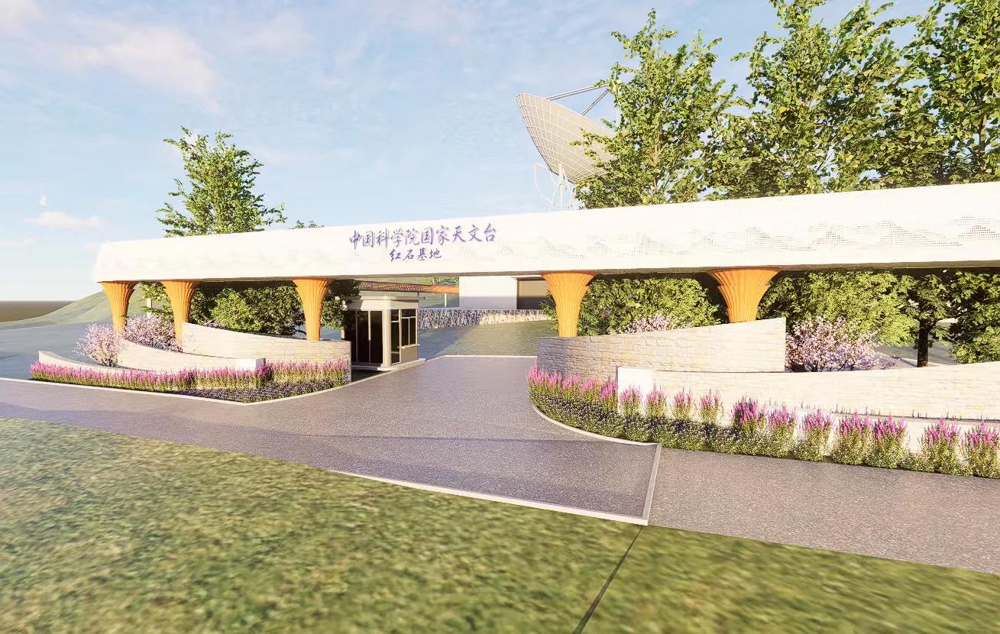
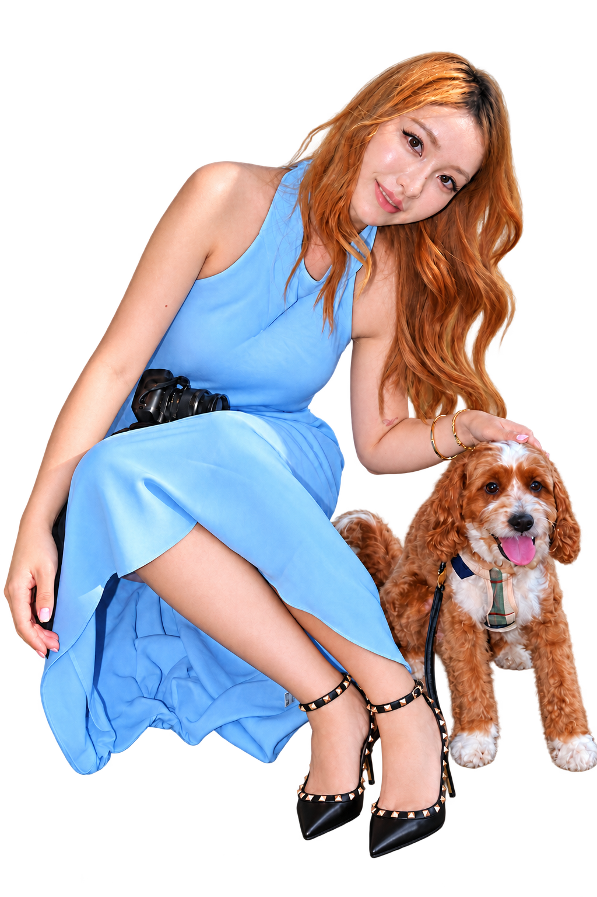
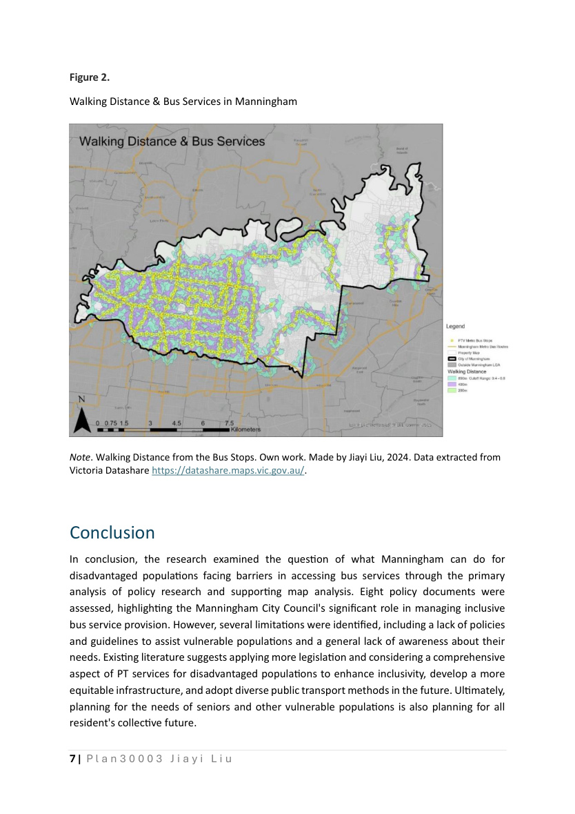
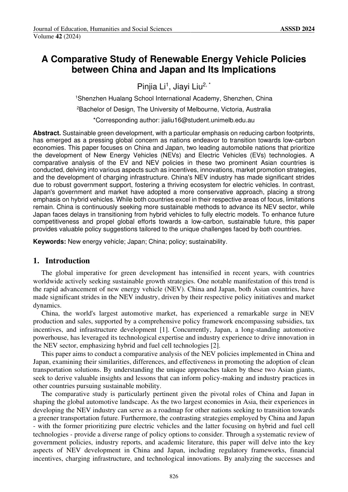

实习项目 / 7页作品集LANDSCAPE / DESIGN PRACTICE
景观规划设计作品集
从文化公园、建筑入口到骑行公路环境提升，呈现我参与的方案设计、建模与图纸表达。
DESIGN × COMMUNICATION × CURIOSITY
你好，我是刘佳億，Jiayi。
从景观与空间的观察，到镜头前后的表达，
我喜欢用不同的方式，理解人与生活的连接。

保持观察，持续创造 ✳01 / SELECTED WORK
用设计回应空间，用研究理解问题。
也用镜头，分享我的观察。

实习项目 / 7页作品集从文化公园、建筑入口到骑行公路环境提升，呈现我参与的方案设计、建模与图纸表达。

本科课程作业 / 2024通过8份政策文件比较与ArcGIS地图分析，研究公交服务覆盖与弱势群体出行需求。
参与星与传媒新闻视频出镜播报与现场录制。可直接在本页播放，个人职责为出镜参与。
个人AIGC视频创作尝试，以狗狗的日常为叙事主题，探索生成式影像表达。画面含AI生成内容。

合著论文 / 2024围绕政策激励、技术创新、市场推广与充电基础设施进行比较分析，关注可持续交通转型。
02 / EXPERIENCE
表达、协作、理解受众。
每一段经历，都带来新的观察角度。
参与“榴学生日记”品牌宣传、产品直播，以及中国食品报相关活动采访提纲的修改与完善。
参与面向美国华人社区的新闻视频制作与出镜播报，配合完成现场录制，已有两条作品公开发布。
制作推广海报与宣传横幅，协助维护客户反馈、开展合作方联络及招聘信息宣传。
参与社交媒体短视频拍摄，根据内容主题调整镜头表达，配合团队完成个人出镜部分。
03 / EDUCATION
跨学科学习，让我看见问题的不同侧面。
Johns Hopkins University
公共管理相关硕士课程关注经济与政策分析、资源配置及定量研究。
The University of Melbourne
设计学科背景关注景观、空间设计与使用者体验。
04 / BEYOND THE RESUME
点开卡片，认识我的另一面。
或者，让好奇心帮你抽一张。
点击卡片查看背后的故事
LIFE, THROUGH MY LENS
在雪道上寻找节奏，在旅途中收集风景，也在镜头前尝试不同的自己。
互勉拍摄照片为与摄影伙伴共同完成的出镜作品。户外运动也包括日常喜欢的网球；照片记录滑雪与海上体验。
VIDEO / EVERYDAY STORIES
用影像记录运动与旅行，也尝试用剪辑和 AI 创作讲述日常故事。从滑雪片段到个人短片，把观察变成可以分享的内容。
单独打开滑雪视频 · 32秒 ↗小红书粉丝数由本人提供，记录于2026年10月。
生活里的另一点好奇心：宝可梦、动漫与主题体验。